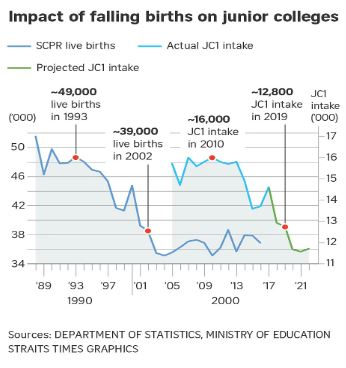

This page will show the analysis we did for the project, more details on our analysis and step-by-step guide can be found in the full report.
Accessibility of schools
Accessibility of Junior Colleges

The figure above displays the junior colleges (JCs) that exist prior to 2019, where schools colored in pink represent JCs that will close as a result of the school mergers and closures announced by MOE in 2017 (Sin, 2017) while schools colored in yellow are those which are still operating. Overall, the accessibility of JCs had a large disparity across Singapore, with the highest accessibility being 254 metres from the nearest JC and the lowest accessibility being 47626 metres.
Areas with higher accessibility will have hexagons with darker shades of green and lower distance (in metres) to reach JCs as compared to those with lower accessibility. These areas are located close to the central region of Singapore due to a group of JCs located close to one another; these JCs include Raffles Institution, Nanyang Junior College, Anderson Serangoon Junior College, Eunoia Junior College and St Andrew's Junior College. Hence, residents living in Bishan, Toa Payoh and Ang Mo Kio experience higher accessibility to junior college education in Singapore as they live either near or in between these JCs.
On the other hand, areas with lighter shades of green indicate lower accessibility to JCs. The outermost western, eastern and southern regions of Singapore have some of the least accessibility to JCs. However, these regions are usually not labelled as residential areas (e.g. industrial sites in Tuas, island resort in Sentosa, airport terminals in Changi Airport) which justifies having lower accessibility to JCs. Nevertheless, there are still some residential areas that are identified with lower accessibility to JCs, as seen colored with lighter shades of green as compared to those located in the central regions as mentioned in the previous paragraph. These areas include Jurong West, Choa Chu Kang and Changi.

The overall accessibility to JCs has decreased after the school closures and mergers in 2019, where the total area of dark green hexagons has decreased compared to that of the accessibility map before mergers. Similar to the map before mergers, the central region of Singapore has the highest accessibility to junior colleges while the outermost western, eastern and southern regions remain relatively similar. However, the merger and closure of junior colleges resulted in significantly decreased accessibility for the western, northeastern & northwestern regions. These affected areas can be observed in Figure 2 where they have reduced shading of the hexagons compared to their counterparts in Figure 1, from being in the darkest colour range of 254 - 2932 to the middle colour range of 7984 to 10380. We have identified the following mergers that has affected the accessibility in these region:
- Jurong JC and Pioneer JC
Jurong JC closed and merged with Pioneer JC. The final location of the merged JC is Pioneer Junior College's current location at 21 Teck Whye Walk in Choa Chu Kang, reducing accessibility to JCs from the western region in Singapore.
- Innova JC and Yishun JC
Innova JC closed and merged with Yishun JC. The final location of the merged JC is Yishun Junior College's current location at 3 Yishun Ring Road in Yishun, reducing accessibility to JCs from the northwestern region in Singapore.
- Tampines JC and Meridian JC
Tampines JC closed and merged with Meridian JC. The final location of the merged JC is Meridian Junior College's current location at 21 Pasir Ris Street 71 in Pasir Ris, reducing accessibility to JCs from the northeastern region in Singapore.
Accessibility of Secondary Schools

The figure above represents the various secondary schools in Singapore prior to the 2018 and 2019 closures and mergers of some of the schools (Sin, 2016 & 2017). Similar to our JC analysis, secondary schools colored in pink represent the schools that will close or merge as a result of the school mergers and closures announced by MOE in 2018 and 2019 while symbols colored in yellow are schools which are still operating. The overall accessibility of secondary schools is more evenly distributed across Singapore as compared to junior colleges. The highest accessibility is 135 metres from the nearest secondary school and the lowest accessibility being 44447 metres, which is a smaller range compared to our JC analysis, indicating that there is less disparity in accessibility to secondary schools than that of JCs.
The outermost western, eastern and southern regions of Singapore have less accessibility to secondary schools. However, as mentioned in our JC analysis, these regions of Singapore are mostly not residential areas, justifying their low accessibility to secondary schools. Apart from the aforementioned non-residential areas, there are other areas colored lighter red with less accessibility to secondary schools which includes the city areas of Singapore such as City Hall, Dhoby Ghaut and Bugis.

The overall accessibility to secondary schools after the school closures and mergers in 2018 and 2019 has decreased as the total area colored dark red decreased. Some regions such as the outermost western, eastern and southern regions remain relatively similar as they are still colored light red. The regions that were most impacted by the school closures and mergers are the western and central regions of Singapore. The accessibility of areas affected by the mergers is smaller compared to the accessibility of JCs as the change in shading of the hexagons were less prominent compared to their JC counterpart, from being in the darkest colour range of 135 - 1853 to the to the second darkest colour range of 1853 - 3278.
The mergers that significantly affected the accessibility include:
- Hong Kah Secondary and Jurongville Secondary
Hong Kah Secondary closed and merged with Jurongville Secondary. The final location of the merged secondary schools is Jurongville Secondary located at 202 JURONG EAST AVENUE 1 in Jurong East, reducing accessibility to secondary schools in Singapore.
- Bishan Park Secondary and Peirce Secondary
Bishan Park Secondary closed and merged with Peirce Secondary. The final location of the merged secondary school is Peirce Secondary located at 10 SIN MING WALK, slightly improving accessibility around the central regions in Singapore.
Accessibility of Primary Schools

The map above exhibits the primary schools that have merged and are still currently active, where pink colored icons represent the primary schools that will close or merge as a result of the school mergers and closures announced by MOE by 2021 while icons colored in yellow are schools which are still operating. Overall, the accessibility of primary schools is the largest amongst all educational levels with the highest accessibility being 55 metres from the nearest primary school and the lowest being 43661 metres.
The northeastern regions of Singapore have the highest accessibility to primary schools as many primary schools are concentrated in these areas. Hence, residents living in Punggol and Seng Kang have the shortest distance to access primary school education in Singapore. In contrast, the outermost western, eastern and southern regions of Singapore face less accessibility to primary schools as these are not residential areas. Apart from these areas, we identified some areas with lighter shades of blue (indicating less accessibility to primary schools) such as Boon Lay.

After the school closures and mergers in 2019, the overall accessibility to secondary schools remained the same with little to no difference in shading, as seen in Figure 11.
The outermost western, eastern and southern regions are still colored light blue, indicating no improvement in accessibility to primary schools. Areas with school closures and mergers (as shown in Figure 10, where the pink symbols are) are not visibly affected as there are still existing primary schools in the near vicinity.
Overall Analysis
Our analysis has concluded that the impact of these mergers and closures from 2018 to 2021 varies among the three institution levels that we have studied.
Primary schools have the highest equity of access with the smallest disparity in accessibility. This could be due to the safety consideration that parents of primary school students do not want them to travel too far from home. Another possible reason could be the standardised education received to every primary student unlike the streaming exercises (e.g. PSLE, O/NA/NT/A Levels) and difference in subject combinations in secondary schools and JCs, where students specialises in different subjects and levels (e.g. 'O' Levels versus 'NA' Levels in secondary schools, H3 subjects versus H2 subjects in JCs). Finally, the large availability of primary schools islandwide would have accounted for the least disparity in accessibility as compared to secondary schools and JCs.
Conservely, JCs have the least equity of access and, subsequently, the most disparity in accessibility due to their lowest number of schools available, with only 10 schools left by 2021. Additionally, with the age range of students being more older and mature, parents of JC students would be more willing to allow their children to travel more to pursue higher education
In conclusion, accessibility to JCs were affected the most by the school mergers and closures, followed by secondary school. Mergers and closures on the primary school level had negligible impact on the equity of access.
Upon further investigation, these mergers and closures can be attributed to the population of existing schools and their ability to continue operating with their current student population who are not graduating. Following that, the decreasing demand for JCs may be correlated with the declining birth rate of Singapore, as seen in the infographic below from a Straits Times Article (Davie, 2017).

Population Analysis
Population Analysis of youths aged 17 - 20 & Location Distribution of Junior Colleges

The distribution of youth eligible for JC (aged 17 - 20) is concentrated in the northern, northeast and eastern regions of Singapore (this is assuming that all youths aged 13 to 17 are eligible for JC enrolment and not taking account of their academic competency. Some of these youths may prefer taking other educational routes such as Polytechnic or ITE). Subzone areas with significantly large population numbers include Woodlands East, Tampines East and Yunnan.
However, most JC schools are not located close to these subzones. In fact, ACJC is located in one of the least-densely populated areas. Their geographical location could have been attributed to a shift in population distribution over time, since the school was founded in 1886. Thus, while the location of the school during its founding would have been suitable for most youths enrolling for the school, it may not be suitable in today's context.
Population Analysis of youths aged 13 - 17 & Location Distribution of Secondary Schools

The areas most populated with youth aged 13 to 17 in Singapore were Woodlands East, Tampines East, Jurong West Central. Similar to that of children aged 7-12, the distribution of students eligible for secondary schools (aged 13-17) have a similar distribution, with the population concentrated in the northern, northeastern and eastern regions of Singapore. Interestingly, there is also a significant number of youth aged between 7 to 12 in the western region. As mentioned in the previous analysis, focused housing development in the eastern and northern region has allowed families to settle down and have more children.
Overall, there is an adequate number of secondary schools for subzones which are more densely populated with youth aged 13 to 17. There is at least one secondary school in the subzones with the population ranges of 4000 - 6030 and 2220 - 4000. However, the number of secondary schools can be increased in certain subzone areas, especially the northeastern region of Singapore. The subzones are Fernvale, Matilda and Anchorvale. Additionally, Yunnan is a subzone with no secondary schools despite being in the second most populated range of 2220 - 4000.
Population Analysis of children aged 7 - 12 & Location Distribution of Primary Schools

The average student age enrolling into primary schools is 7 and assuming a student successfully completes their primary education, they will be 12 years old upon graduation. Upon analysing the population aged 7-12 in 2021, more children are found to be living in the northern and eastern side of Singapore. These areas include Tampines East, Woodlands East, Fernvale.
Coincidentally, these are areas where the government is focusing on housing development such as Build-To-Order (BTO) flats and rapid community developments such as Tampines 5-year Master Plan which has been ongoing to improve living conditions for families (Tampines Town Council, 2019). These top 3 subzone areas have at least 3 primary schools within their boundaries which would provide enough opportunities for parents to enrol their children into primary education.
Overall Analysis
All three maps share a similar trend where children and young adults are living in areas where housing and community developments are currently being focused on. Both the eastern and western regions of Singapore have ongoing 5-year plans to redevelop the areas for better housing, communal and recreational experiences (Urban Redevelopment Authority, A & B, n.d.).
However, as education is an important asset to any development of a country, educational institutions must be easily accessed to encourage parents to enrol their children into these institutions. While the distribution of primary and secondary schools seems fair with respect to the population distribution, there is a greater need for the locations of JCs to adapt to the population shift today. Schools that have been in the same location for a very long time should consider moving to more convenient areas where they are easily accessible to the majority of potential students, especially if their location is becoming inconvenient to more students. With the upcoming mergers and closures of primary and secondary schools in April 2022 (MOE, 2022), the MOE should further consider the importance of geographical location of their current and future schools across all institutions.
Limitations & Reflections
Broad Nature of the Project’s Scope
Our project focuses on the accessibility of three different institutional levels and, therefore, requires us to work on a significantly large amount of data. This reduced our ability to do further in depth analysis given our limited time to work on this project. However, we strongly believe that our project leaves more to be desired as we envisioned other forms of analysis that could be done such as shortest path analysis to show the changes in distance between schools (before and after school mergers and closures) and MRT stations. From this form of analysis, we will be able to see if the accessibility to schools via public transport has been reduced due to mergers. We will also be able to evaluate which schools and subzones have the greatest accessibility to public transport.
Disconnected Roads around Central Water Catchment area
During our data processing, we selected and extracted some roads while excluding others to factor in contextual logic in our analysis. For example, a primary student normally prefers to walk rather than travelling great distances to their school via bus or car. However, this method of extracting roads has caused some roads to be disconnected from the main road network. Consequently, this led to our various choropleth accessibility maps to shade certain hexagon areas that should have otherwise been white unshaded areas. For instance, the hexagons overlapping the Central Water Catchment area in the middle of Singapore are observed to have some shade of colour when, in actuality, should be white as the area is not considered a residential area. While our team was not able to rectify this issue of taking account of the Central Water Catchment area due to the interest of time, we do acknowledge it as a contradicting factor to the contextual knowledge we had understood.
Consideration our age range for youths studying in JCs
Finally, the age range used to analyse the population, specifically to find a connection between the location of JCs and youths aged 17-20, is vastly overestimated as not all young
adults in that age range pursue the JC education route. Some may pursue other education routes such as polytechnic, Institutes of Technical Education (ITE) or even not studying at all during this time of their life (e.g. working or taking a break). Hence, this is one of our assumptions that we had to consider in order to proceed with our analysis. We can improve on this analysis by finding other datasets that better represent the population who go to JCs in the subzones, such as the number of enrollments into primary schools, secondary schools and JCs in each subzone.